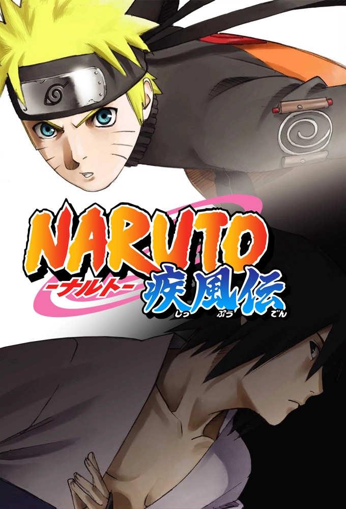
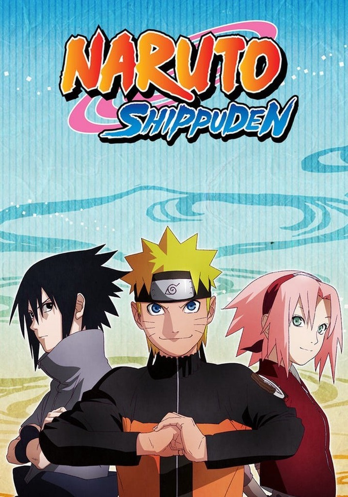
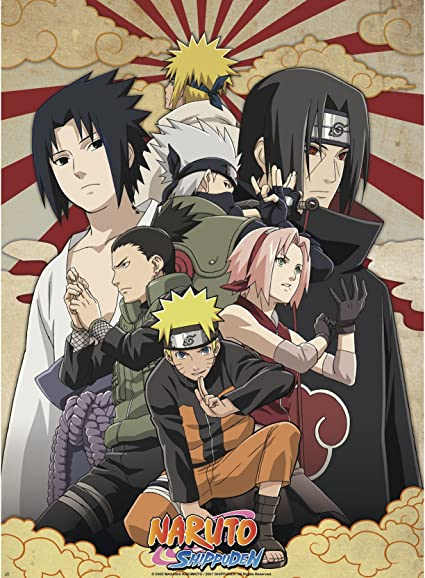
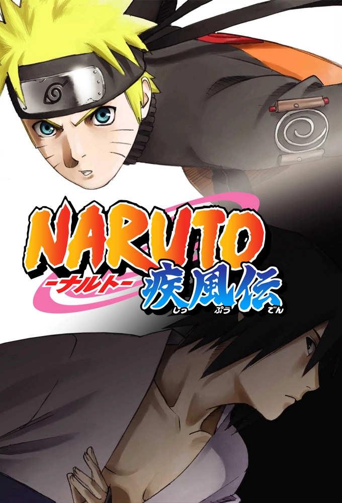
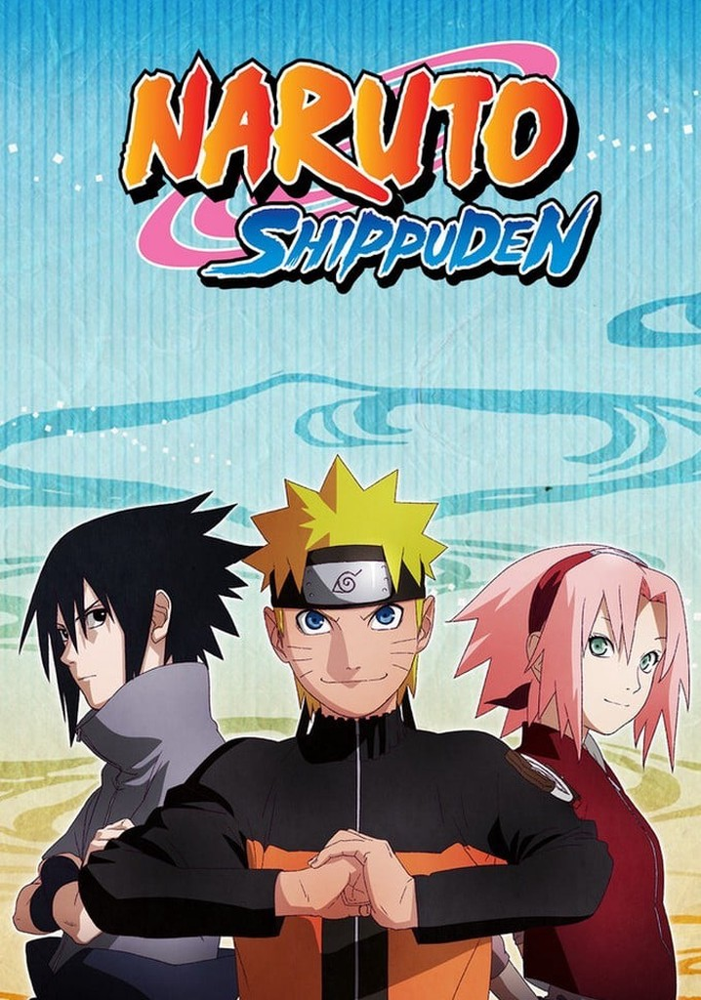
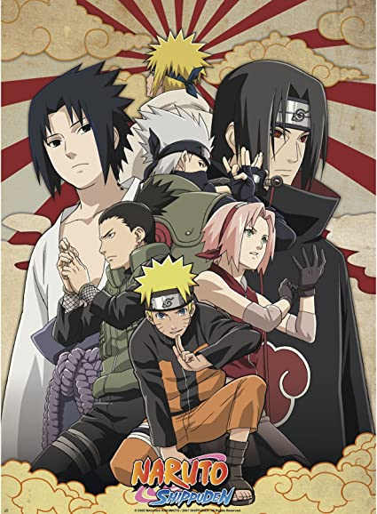

El anime Naruto, el cual está basado en el manga del mismo
nombre de Masashi Kishimoto, se centra en las aventuras de Naruto Uzumaki, un ninja de la Aldea de la
Hoja (Konohagakure) que busca reconocimientos y sueña con convertirse en el Hokage de su pueblo. Los
episodios se basan en los primeros veintisiete volúmenes de la Parte I del manga, mientras que algunos
episodios presentan
historias originales y autónomas. Los 220 episodios que constituyen la primera parte de la serie fueron
transmitidos entre el 3 de octubre de 2002 y el 8 de febrero de 2007 en TV Tokyo en Japón.
Naruto Shippūden es una serie de anime adaptada de la Parte II del manga de Masashi Kishimoto del mismo
nombre, y cuenta con exactamente 500 episodios. Se desarrolla dos años y medio, después de la Parte I en
el universo de Naruto, producida por Pierrot y TV Tokyo.
Aunque en su transmisión original la serie no estuvo dividida por temporadas, sino por arcos
argumentales. Esta se encuentra completa en streaming en varios países con subtítulos en distintos
idiomas a través de diferentes plataformas de pago o en paginas de anime por internet.
 




